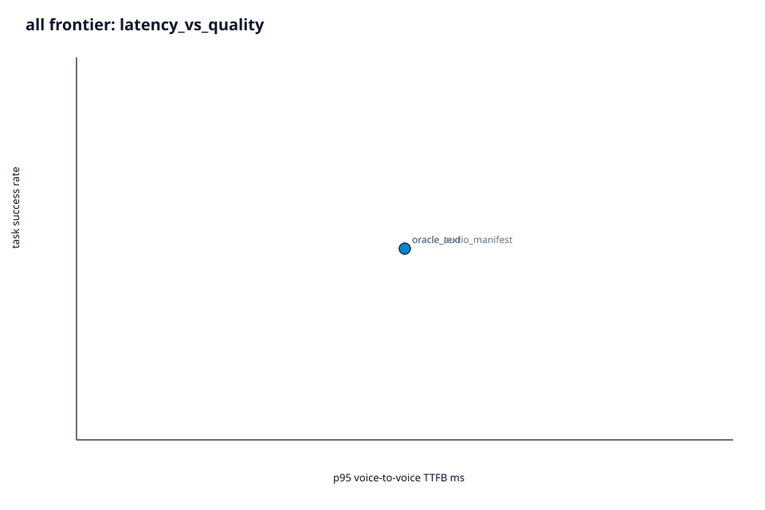

OpenVoiceCS-Bench evaluates voice AI customer-service agents on stateful task completion, policy adherence, tool correctness, privacy, authentication boundaries, cost, and voice-to-voice latency.
The benchmark is built around reproducible scenario sandboxes. Each scenario defines the customer goal, starting database state, available tools, standard operating procedure requirements, forbidden actions, and expected final state.
A strong score requires more than a fluent answer. The agent must call the right tools, avoid unsafe actions, respect identity gates, preserve privacy, and recover from noisy or adversarial calls.
Scenarios replay tool calls against deterministic database state, then compare the resulting state and required events against an oracle.
The release captures p50, p95, last-byte, barge-in, interruption recovery, and load evidence across 1, 10, and 100 concurrency targets.
Release artifacts pin scenarios, audio, provenance, splits, pricing, reviews, claims, sealed operations, and judge packages with hashes.
The scenario suite covers text-to-action, audio-to-action, end-to-end voice, robustness, and adversarial compliance. Counts below are rendered from the audited release artifacts.
The official seed frontier currently contains reference oracle systems that prove the pipeline. The ranked leaderboard comes from a —-model OpenRouter sweep of the text_to_action track scored with the corrected v0.2 scorer — three trials per scenario, and only models whose trials actually completed. The withdrawn v0.1 exploratory numbers no longer appear on this site.

| # | Model | Coverage | Overall |
|---|---|---|---|
Leaderboard not loaded — generate site/data.json with python scripts/build_site_data.py. | |||
factual_grounding metric is provisional — a literal phrase matcher that penalises paraphrase and honest failure reports; removing it reorders — of the — ranked positions, so trust the podium, not small gaps. Models are ranked only when at least 90% of their trials produced a usable trace; the other — of — attempted models are excluded as unmeasured — free-tier rate limits and dead endpoints — which is a different statement from “scored badly”. The full accounting is in docs/known-limitations.md.
The results page includes the ranked v0.2 leaderboard, official frontier scorecards, scoring weights, scenario composition, audio perturbations, release gates, known limitations, and reproduction commands.
Open Results & Methodology